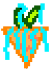
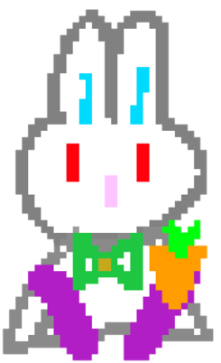
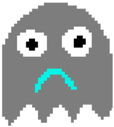

Project 01
Cyber City Farm
A hand-drawn interactive farming game created with Processing, combining original character design, playful worldbuilding, and simple game mechanics.

Overview
Project Overview
Cyber City Farm is a small interactive game that combines farming mechanics with a playful cyber-themed visual world. The player interacts with the environment through simple actions such as planting, harvesting, and caring for characters inside the game world.
The goal of this project was to create a game that felt both visually original and technically functional. Instead of relying on premade assets, I wanted to build a world that was personal and recognizable through my own illustrations and then bring that world to life through Processing.
Role
My Contribution
I was responsible for both the visual and technical development of the project. I hand-drew the game assets, including the characters, props, and object designs, and then used Processing to build the interactive system and game logic.
This project reflects my interest in combining illustration, storytelling, and coding into one digital experience rather than separating visual design and programming into different stages.
Tools
Tools and Media
This project was created mainly in Processing, a Java-based programming environment often used for interactive media and creative coding. Processing allowed me to build the gameplay structure, object interaction, and overall system behavior.
At the same time, I created the visual components of the project myself. The combination of hand-drawn assets and Processing helped me create a game that felt more unified, personal, and expressive.
Process
Design and Development Process
I started by planning the general concept and atmosphere of the game. I wanted it to feel playful and imaginative, so I developed a cyber-themed farming setting that could support both visual experimentation and simple interaction.
After defining the concept, I moved into the visual development stage and designed the core assets by hand. This helped me establish the style of the game before moving into code. Creating the art first gave me a clearer sense of the world and the types of interactions it should support.
Once the assets were prepared, I used Processing to build the game system. I worked on integrating the objects into a playable environment and connecting the illustrated components to the interactive mechanics. This part of the process was important because it turned the project from a visual idea into a functioning game.
Visual Development
Asset and Character Design
One of the most important parts of Cyber City Farm is its visual identity. I drew all of the main elements myself, including the game items and character designs, in order to make the game feel more original and visually consistent.



These assets were designed to give the game a clear personality. The carrot variations helped support gameplay interaction, while the rabbit and robot characters gave the world more narrative energy and contrast. Through this process, I learned how important it is for characters, props, and mechanics to visually support the overall game idea.
Challenge
Challenges
One of the biggest challenges in this project was balancing the visual and technical sides of the work. Since I was both creating the artwork and building the interactive system, I had to make sure that the assets were not only visually interesting, but also clear and usable inside the game environment.
Another challenge was translating static drawings into a playable experience. Designing characters and objects is very different from making them function in an interactive system, so I needed to think about how the game logic, movement, and visual hierarchy could work together.
This project taught me that game design is not just about code or art separately. The real challenge is making both sides support each other to create one complete and coherent experience.
Outcome
Reflection
Cyber City Farm helped me strengthen both my creative and technical practice. I was able to connect hand-drawn illustrations with Processing-based gameplay, which made the project feel more personal and more complete.
It also gave me more confidence in combining visual storytelling with programming. Through this project, I better understood how interactive media can bring together design, character building, and simple coded systems in a meaningful way.